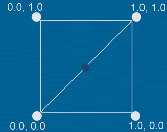
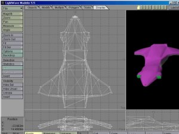
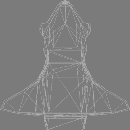
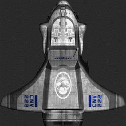

|
|
introduction This page aims to explain how opengl can be used to place texture maps onto polygons. Opengl uses the concept of 'texture coordinates' to achieve texture mapping. These are stored per-vertex and are interpolated in areas where there are no vertices. Below, we go into detail, firstly on texturing your objects in a modeling package and then calculating texture coordinates step by step.
This is only the simplest case. We have one
image per texture map and only do planar texture mapping. For more elaborate and efficient texture mapping see [texture tools
extortion]
|
The image to the right shows
4 vertices, arranged
in a plane. Notice how zero-zero is in the bottom left corner
with one-one at the top right. Repeating textures have no upper bound, IE the top-right value could be anything above 1.0 |
 |
Many 3D modeling packages can export UV texture coordinates along with the model. (opengl calls these coordinates S and T). We're going to generate our own. Besides, Lightwave doesn't export UV coords anyway, so we're going to do it ourselves.
example We'll start by thinking about how we use our modeler to texture the object. In the example below we setup a model and texture in Lightwave. Don't worry if you don't have this package - most 3d modelers work in a similar way.
|
 |
|
|
 |
|
 |
|
science
bit
We've got our model all textured up - now we need to generate texture
coordinates from the vertex data. Planar coordinates are actually very
easy to generate if you think about it. Read on to see the way I do it... As I mentioned above, non repeating texture coordinates start at 0.0 (in the
bottom left hand corner) and finish at 1.0 (in the top right hand corner). So each vertex belonging to 'top surface' needs a S and a T coordinate that
map directly to the image. For example: We need to use some simple maths to figure out what the S and T value of each
vertex in 'top surface' should be. Our purple 'top surface' is being texture mapped in the Y plane. IE we
are looking down on the ship from above, along the Y axis. To generate the
coordinates we need look at the values of vertices in the X and Z planes. In this example, consider the X plane - the vertices in this plane will form
our S coords. Next we take the absolute range of the highest and
lowest (note: multiplying a number by -1 changes its sign)
A vertex somewhere on the left wing would have a S coord of about 0.15 and a
T coord of about 0.20. These numbers dictate whereabouts opengl looks for
a texel in the image. That is why its very important to get everything
lined properly when you draw your texture.
range = (lowest - highest) * -1
offset = 0 - lowest
Now for each X coord in 'top surface' we add its value to the offset, and divide by the range.
Lets have a proper example of the maths...
For this example of generating S coordinates (from X coords) we'll say that:
lowest X: -12.00
highest X: 134.56
So first we find the range and the offset:
range = (lowest - highest) * -1
146.56 = (-12.00 - 134.56) * -1
offset = 0 - lowest
12 = 0 - -12
Now we go through all the vertices in the X plane. As an example, for a vertex that has an X value of 87.45 we do this:
87.45 + offset = absolute position
So there you have it! You do this for all the vertices in the X and Z planes and store the results with their corresponding 'parent' XYZ coordinates.
Website and content, Paul Groves
.